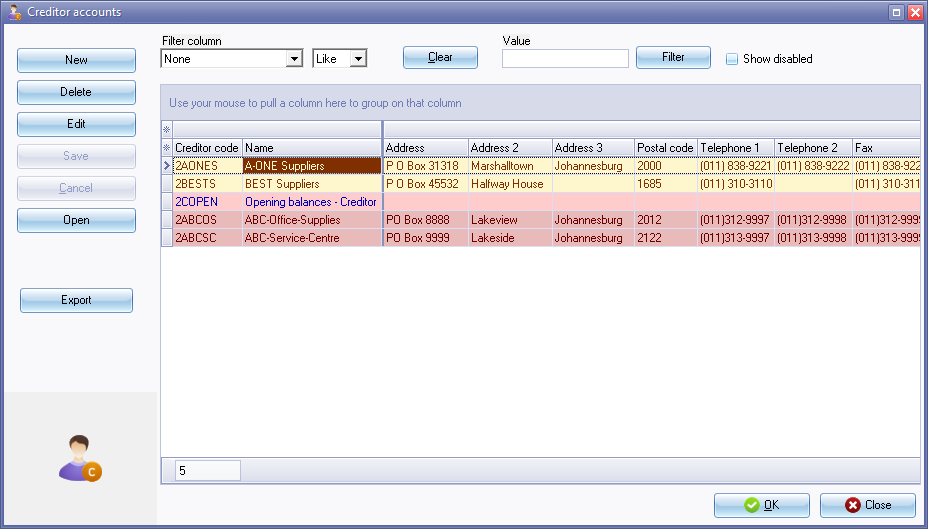
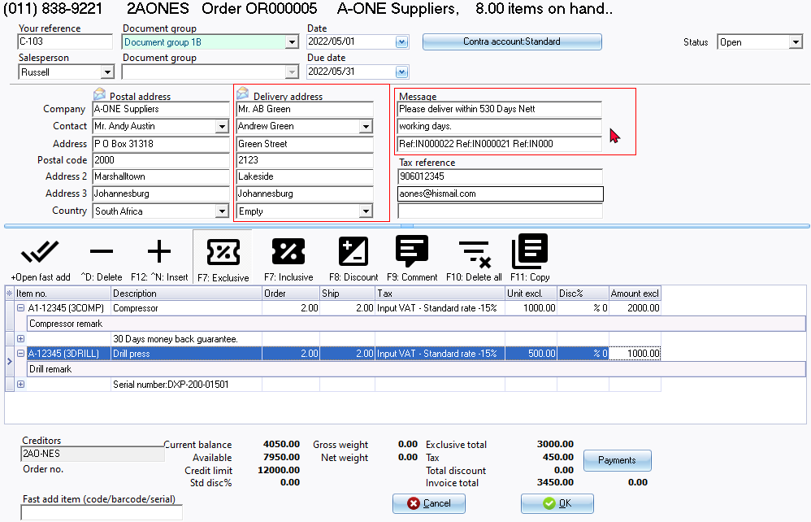

Context menu - Convert invoice to an order
The context menu option will only be available for the Invoices document type.
To convert invoice(s) to order(s):
- Select the Invoices document type.
- Select the document(s) to convert.
- Right-click and select Documents → Convert invoice to order option on the context menu. A confirmation message is displayed:
Do you wish to continue?
- Click on the Yes button to continue. The "Creditor accounts" screen is displayed:

- Select the creditor (supplier / vendor) account and click on the Open or OK button.
- The Order(s) will be available as "Unposted" if the "Orders" document type is selected.

|
|
Edit orders converted from invoices You need to check and edit the following, if needed:
|

|
|
Comments and remarks The comments and remarks, if added in the source invoice will be included in the converted order. You may need to check and edit these, if necessary. This is important if specific information for the stock item (such as, for example, series or serial numbers, etc.) may not be applicable in the converted order. |